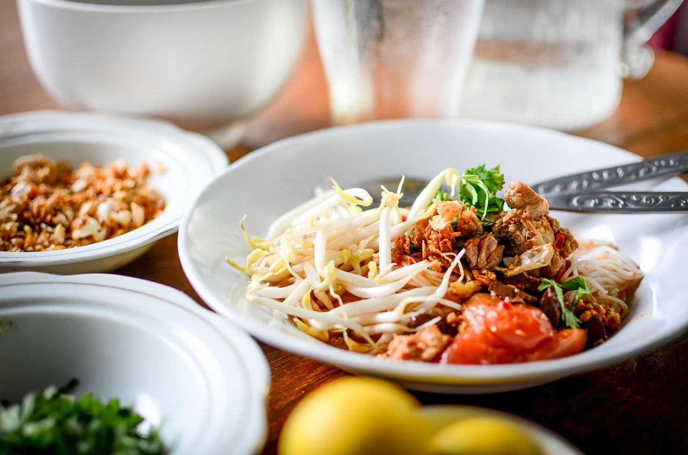

Good meals made fast
Welcome to our recipe website made just for busy people like you! We know life can get really hectic. Whether you're a parent trying to feed your kids after a long day or a working professional who just got home from the office, the last thing you want to do is spend hours in the kitchen. That’s where we come in. Our goal is to help you make fast, simple, and tasty meals without all the stress. You don’t need to be a chef, and you don’t need a ton of time. With our recipes, you can have dinner ready in no time.

We believe that just because you’re short on time doesn’t mean you should settle for takeout or frozen meals every night. Our recipes use everyday ingredients you probably already have at home. Many of them take 30 minutes or less to make. Some are even ready in 15 minutes! From quick pastas and easy stir-fries to one-pan dinners and no-cook lunches, there’s something here for everyone. We also include tips to help you save time while cooking, like how to prep ingredients ahead or how to cook smarter with fewer dishes.

This website is all about helping you spend less time cooking and more time enjoying your meal — whether that’s with your family, your friends, or just by yourself after a long day. So take a look around, try out a few recipes, and see how easy and delicious home-cooked meals can be!
Click on an image